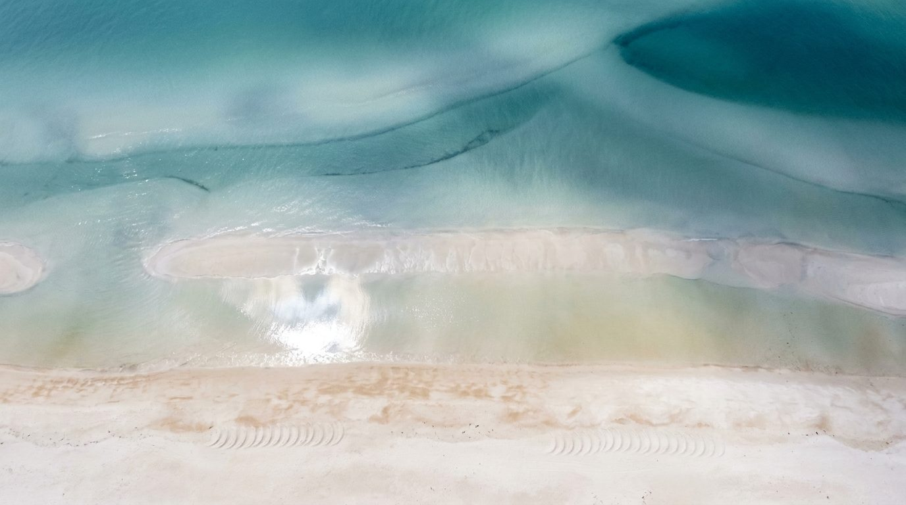
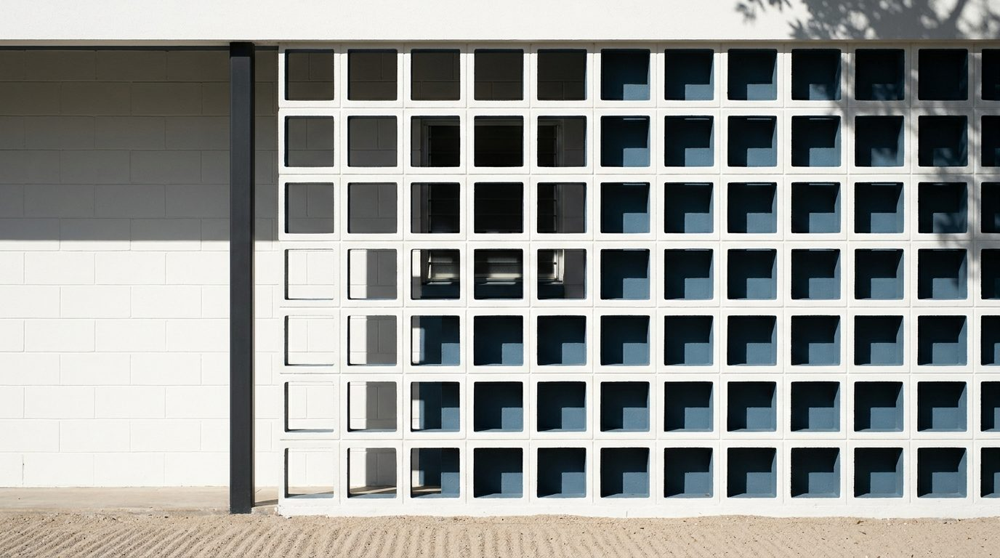
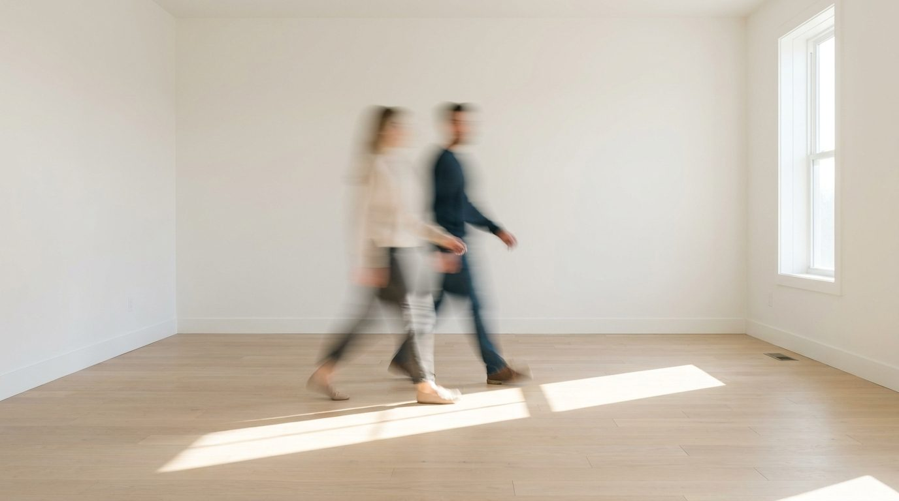
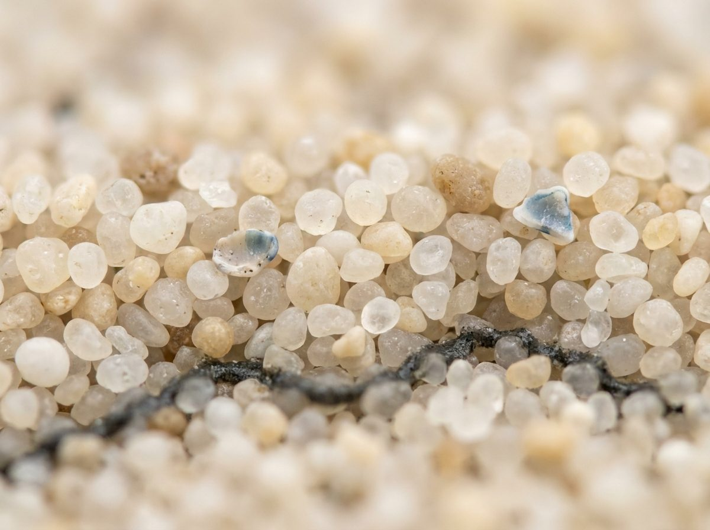
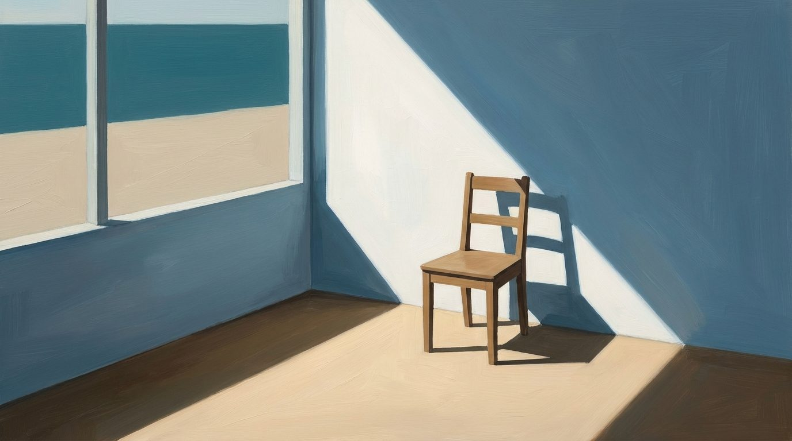

Image library
Place · interiors · moments · texture · illustration
Image library
Twenty-four frames the brand owns outright. Five families, each with a different job: place sells the region, interiors sell the house, moments sell the service, texture sells the palette, and illustration covers the ninety percent of posts that have no photograph worth using.

NEVER STOCK · NEVER AI-OBVIOUS
NEVER A REPLACED SKY
NEVER A REPLACED SKY
ONE IMAGE FAMILY PER SURFACE
NEVER PHOTO AND ILLUSTRATION TOGETHER
NEVER PHOTO AND ILLUSTRATION TOGETHER
TYPE OVER IMAGE ONLY ON THE CALM THIRD
OR ON A DEEP HARBOR SCRIM AT 55%
OR ON A DEEP HARBOR SCRIM AT 55%
01 · Place
The reason people move here. Use for culture posts, market letters, and any surface that has to say Suncoast without a caption.

The hero frame. Every color in the palette is already in this photograph.
PLACE-BARRIER-ISLAND · 16:9
COVERS, HEADERS, FULL-BLEED SPREADS
TYPE SITS IN THE SAND, NEVER THE WATER
COVERS, HEADERS, FULL-BLEED SPREADS
TYPE SITS IN THE SAND, NEVER THE WATER

PLACE-SEA-OATS-DUSK
GOLDEN HOUR · WARMEST FRAME IN THE SET
GOLDEN HOUR · WARMEST FRAME IN THE SET

PLACE-SEA-OATS-WIND
OVERCAST · THE QUIET ONE, GOOD UNDER TYPE
OVERCAST · THE QUIET ONE, GOOD UNDER TYPE
PLACE-STORM-GULF
THE JULY LETTER · STORM SEASON PAGES
THE JULY LETTER · STORM SEASON PAGES
PLACE-MANGROVE-TUNNEL
DARKEST FRAME · REVERSED TYPE ONLY
DARKEST FRAME · REVERSED TYPE ONLY

PLACE-OAK-CANOPY
LAKEWOOD RANCH · THE ONLY GREEN-LED FRAME
LAKEWOOD RANCH · THE ONLY GREEN-LED FRAME

PLACE-SKYWAY-BRIDGE
TAMPA POSTS · MOST TYPE-FRIENDLY OF ALL
TAMPA POSTS · MOST TYPE-FRIENDLY OF ALL
02 · Interiors and architecture
Rooms with nobody in them, shot for the light rather than the square footage. These stand in for a listing before its own photography exists.

Terrazzo, one chair, and the light doing the work
INTERIOR-LIVING-ROOM
THE REFERENCE FRAME FOR ALL BRIEFS
THE REFERENCE FRAME FOR ALL BRIEFS

INTERIOR-JALOUSIE
OLD FLORIDA · GOOD BEHIND REVERSED TYPE
OLD FLORIDA · GOOD BEHIND REVERSED TYPE

ARCH-BREEZE-BLOCK
SARASOTA SCHOOL · THE ARCHITECTURE POST
SARASOTA SCHOOL · THE ARCHITECTURE POST
03 · Moments
The service, not the property. Hands and gestures rather than faces, which keeps them usable for years and clear of release problems.

MOMENT-KEY-HANDOFF
CLOSING POSTS · THE BRASS TIES TO THE FOB
CLOSING POSTS · THE BRASS TIES TO THE FOB
MOMENT-CONTRACT
OFFER AND PAPERWORK POSTS · TWO COFFEES
OFFER AND PAPERWORK POSTS · TWO COFFEES

MOMENT-CROSSING-ROOM
THE TAGLINE FRAME · MOVEMENT, NO FACES
THE TAGLINE FRAME · MOVEMENT, NO FACES

MOMENT-POOLSIDE
LUXURY REGISTER · FIGURES SMALL, BACKS TURNED
LUXURY REGISTER · FIGURES SMALL, BACKS TURNED
Releases
No identifiable face appears in any of these four, which is deliberate. The moment a recognizable client or model is used in marketing, a signed model release is required and has to be kept on file. Hands, backs and blur avoid the question entirely.
04 · Texture
One frame, doing one job: proving the palette came from somewhere real.

Linen and Sky, magnified about forty times.
Siesta Key quartz is ninety-nine percent silica, which is why the sand here reads warm white rather than gold. The shell fragment is almost exactly Sky 300. Use this frame when the palette itself is the subject, and as the ground for the color pages.
TEXTURE-QUARTZ-SAND · 4:3
NEVER FULL-BLEED · IT READS AS NOISE AT SIZE
NEVER UNDER TYPE
NEVER FULL-BLEED · IT READS AS NOISE AT SIZE
NEVER UNDER TYPE
05 · Illustration
The most useful family in the library. Most posts have no photograph worth using, and illustration fills that gap without ever looking like a stock purchase.

ART-BATHYMETRIC
MARKET DATA POSTS · DEPTH AS A METAPHOR
MARKET DATA POSTS · DEPTH AS A METAPHOR

ART-BANDS-SEASCAPE
THE PALETTE ITSELF · QUOTE POST GROUND
THE PALETTE ITSELF · QUOTE POST GROUND

ART-GEOMETRIC-POSTER
EVENT POSTS · THE MOST CONFIDENT FRAME
EVENT POSTS · THE MOST CONFIDENT FRAME

ART-OAK-SILKSCREEN
CULTURE CALENDAR · WPA POSTER LINEAGE
CULTURE CALENDAR · WPA POSTER LINEAGE

ART-GOUACHE-SHORELINE
NOTECARDS AND CLOSING GIFTS · HANDMADE
NOTECARDS AND CLOSING GIFTS · HANDMADE

ART-RISOGRAPH-COAST
TWO-INK PRINT JOBS · MISREGISTER IS THE POINT
TWO-INK PRINT JOBS · MISREGISTER IS THE POINT

ART-WOODBLOCK-BAY
THE JANUARY LETTER · MOST FORMAL FRAME
THE JANUARY LETTER · MOST FORMAL FRAME

ART-GRID-BREAKING
INVENTORY AND SUPPLY CHARTS · ABSTRACT DATA
INVENTORY AND SUPPLY CHARTS · ABSTRACT DATA

ART-PORCH-CHAIR
FIRST-TIME BUYER PAGES · WARMEST ILLUSTRATION
FIRST-TIME BUYER PAGES · WARMEST ILLUSTRATION
06 · How to choose
One family per surface
A photograph and an illustration on the same page read as two brands. Pick the family first, then the frame. The market letter is photo-led; the culture calendar is illustration-led.
Illustration for anything recurring
A series that posts weekly will exhaust seven photographs in two months. Illustration is reusable without looking repeated, which is why it carries the calendar.
Type needs a calm third
Sky over the bridge, sand under the oats, wall beside the jalousie. If no third of the frame is calm, put the type on a Deep Harbor panel beside the image instead of over it.
Never a property you do not represent
Interiors here are unattributed and generic on purpose. Using a recognizable house the team has no listing on implies a relationship that does not exist.